5. Kill little martians¶
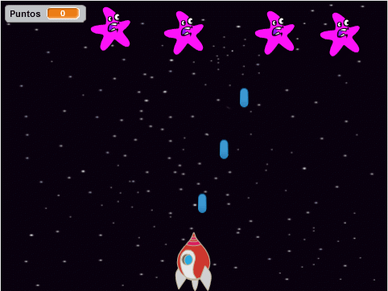{kind=link}
In this practice we are going to program a game that consists of killing Martians that fall from the top of the screen with the laser of a spaceship.
We start the Scratch editor.
We delete the cat by clicking on it with the right mouse button and then pressing delete.

We will change the background of the stage with stars.
Click on the New Background button.

Then click on Space Theme.
Then we select the stars background.
The screen will be as follows.
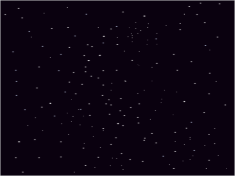Added a new character, a spaceship.
Press the new object button

Then click on Space Theme.
Then we select the Spaceship object.
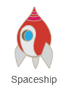Added a new character, a blue button that will be used to fire shots.
Press the new object button
Then click on Things Category.
Then we select the Button2 object.
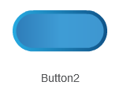Now, by clicking on the i button of the object, we change its name to Shot
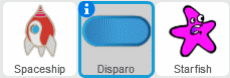We added a starfish, which will act as a Martian.
Press the new object button
Then click on Animals Category.
Then we select the Starfish object.
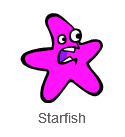We added the variable Points, which will count the number of points accumulated while playing.
Within the Data
 tab,
tab,press create a variable

We change the name of the variable to Points
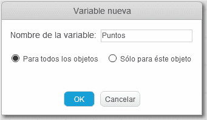Finally we press the button OK
Now we will go to the spaceship program
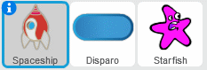and there we create the following program.
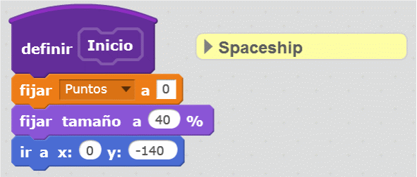These instructions start the program by deleting the points variable, resize the spaceship, and position it at the bottom of the screen.
We continue to program the spaceship.
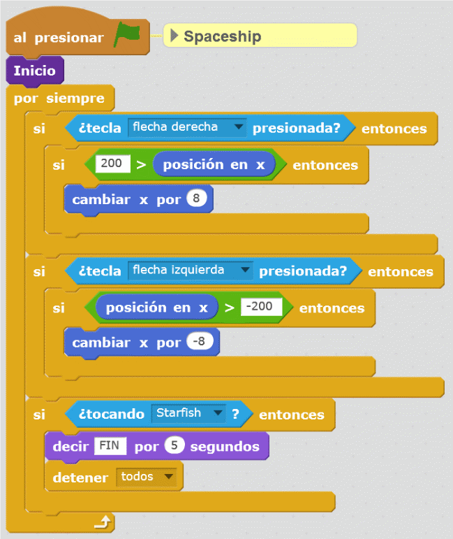This block moves the spaceship from left to right and ends the program when a Martian touches the spaceship.
With another small function, the ship will be able to fire its laser.
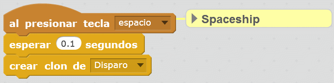We will test that everything works correctly by pressing the green flag and moving the ship left and right with the arrow keys.
The laser will work later when we program the Shot object.
{kind=link}
{kind=link}
{kind=link}
Laser shot¶
Now we will go to the program of the object Trigger
and there we will program its operation.
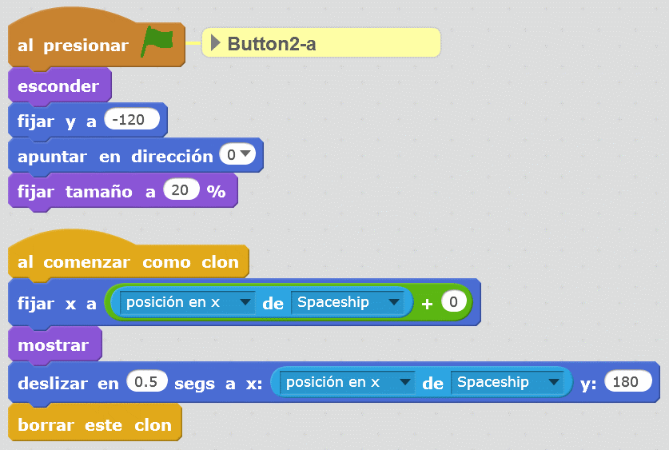This program places the start of the laser at the bottom of the screen (y = -120),
sets the button upright (address 0)
and reduce the size so that the blue button looks like a shot (size to 20%)
Each clone then appears at the spaceship's current position and moves up until it reaches the bottom of the screen, where it disappears.
At this point you can already test the operation of the shots with the spaceship.
{kind=link}
Martians¶
Now we will go to the program of the object Starfish
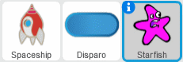And we are going to program the behavior of the Martians at the beginning of the program.
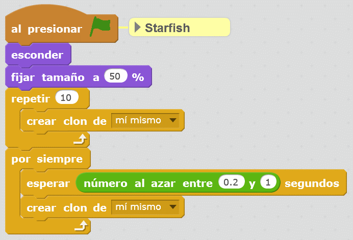This program starts 10 Martians at the top of the screen and creates more Martians from time to time.
The program that manages each one of the Martians will be the following.
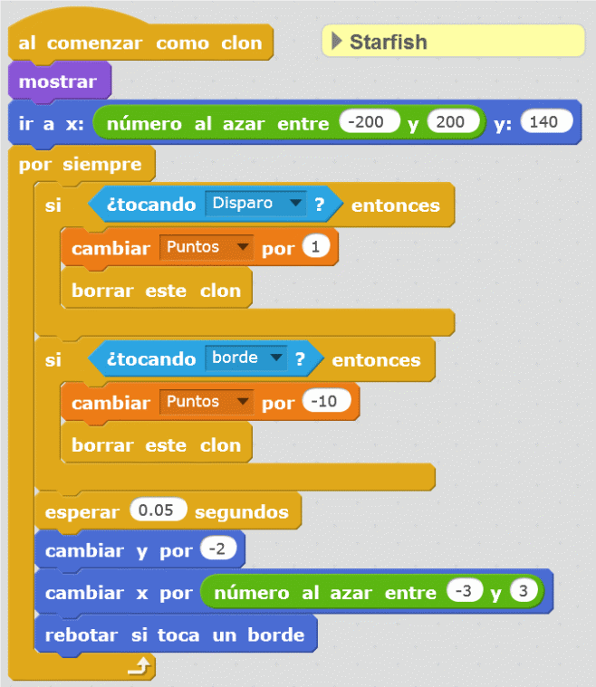When a new Martian is started, it appears at the top of the screen, in a random position.
If a shot hits a Martian, it disappears and the point counter increases by one point.
If the Martian touches the bottom edge, it disappears and the point counter decreases by 10 points.
Every half second, the Martian moves down to the bottom of the screen.
This is the time to try all the programs together and play the Martians for a while.
{kind=link}
{kind=link}
Exercises¶
- Change the parameters of the program to adjust its difficulty making more Martians appear per second and go down faster.
- Adds a double fire function for the spaceship when pressing the "up arrow" key
- Add a barrier that protects the spaceship for a second when pressing "down arrow".
- Invent another original modification for the program.